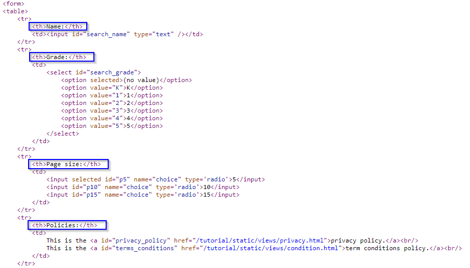

4 Finding Web Elements
Selenium works by automating browsers to load the website, retrieve the required data, and even take certain actions on the website.
4.1 Setting Up
For the successful implementation of browser automation using Selenium, WebDriver needs to be set up. Let us go through the following steps to set up WebDriver for Google Chrome. Other major browsers have the similar steps.
- Install Selenium using a third-party installer such as
pipto install it from the command line via this command:pip install selenium.
- Download the latest stable release of ChromeDriver from the website, appropriate to the platform.
- Unzip the downloaded chromedriver*.zip. An application file named chromedriver.exe should appear. It is recommended that we place the .exe file on the main folder containing the codes.
Now that we have completed the setup for WebDriver and the Selenium Python library, let’s start to use this setup through the Python IDE. I have created this example page to run our scraper against. The following code simply loads the example page:
from selenium import webdriver
driver = webdriver.Chrome('C:\\Users\\JLiu\\Desktop\\Web_Tutorial\\chromedriver.exe')
form_url = "https://iqssdss2020.pythonanywhere.com/tutorial/form/search"
driver.get(form_url)
driver.close()
driver.quit()To begin with, we import webdriver from selenium and set a path to chromedriver.exe. The path created will be required to load Google Chrome. Selenium does not contain its own web browser; it requires integration with third party browsers to run. The selenium.webdriver is used to implement various browsers, in this case, Google Chrome. The webdriver.Chrome() method is provided with the path of Chrome WebDriver so that it creates an object of the selenium.webdriver.chrome.webdriver.WebDriver class, called as “driver” in this case, which will now provide access to the various attributes and properties from webdriver. chromedriver.exe will be instantiated at this instance or upon creation of the driver object. The Terminal screen and an empty new window of Google Chrome will be loaded. The new window from Google Chrome is then provided with a URL using the get() function from webdriver. The get() method accepts the URL that is to be loaded on the browser. We provide the example website address as an argument to get(); the browser will start loading the URL, as shown in the following screenshot:

As you can see in the above screenshot, a notice is displayed just below the address bar with the message “Chrome is being controlled by automated test software”. This message also confirms the successful execution of the selenium.webdriver activity, and it can be provided with further codes to act on or automate the page that has been loaded.
Following successful execution of the code, it is recommended that you close and quit the driver to free up system resources. close() method terminates the loaded browser window. quit() method ends the WebDriver application.
4.2 Locating Web Elements
After the new Google Chrome window is loaded with the URL provided, we then can find the elements that we need to act on. We first need to find the selector or locator information for those elements in interest. The easiest way to identify the information is to inspect pages using developer tools. Right-click to open the pop-up menu, then select the Inspect option. In the Element window, move the mouse over the DOM structure of the page until it reaches the desired element. We then need to find information such as what HTML tag is used for the element, the defined attribute, and the values for the attributes and the structure of the page.
Next, we need to tell Selenium how to find a particular element or set of elements on a web page programmatically and simulate user actions on these elements. We just need to pass the information we identify in the first step to Selenium. Selenium provides various find_element_by methods to find an element based on its attribute/value criteria or selector value that we supply in script. If a matching element is found, an instance of WebElement is returned or the NoSuchElementException exception is thrown if Selenium is not able to find any element matching the search criteria. Selenium also provides various find_elements_by methods to locate multiple elements. These methods search and return a list of elements that match the supplied values.
find_element_by_id()andfind_elements_by_id()methods:
They return an element or a set of elements that have matching ID attribute values. Thefind_elements_by_id()method returns all the elements that have the same ID attribute values. Let’s try finding the search button from the example website. Here is the HTML code for the search button with an ID attribute value defined as search. You can find this code if you inspect the site and reach this element in its DOM.<input type="submit" id="search" value="Search" name="q" class="button" />Here is an example that uses the
find_element_by_id()method to find the search button. We will pass the ID attribute’s value, search, to thefind_element_by_id()method:search_button = driver.find_element_by_id("search")find_element_by_name()andfind_elements_by_name()methods:
They return element(s) that have matching name attribute value. Thefind_elements_by_name()method returns all the elements that have the same name attribute values. In the previous example, we can find the search button using its name attribute value instead of the ID attribute value in the following way:search_button = driver.find_element_by_name("q")find_element_by_class_name()andfind_elements_by_class_name()methods:
They return element(s) that have matching class attribute value. Thefind_elements_by_class_name()method returns all the elements that have the identical class name attribute values. In the previous example, we can find the search button using its class attribute value in following code:search_button = driver.find_element_by_class_name("button")find_element_by_tag_name()andfind_elements_by_tag_name()methods:
They find element(s) by their HTML tag name. The example page displays a search form which has several form fields to fill in. Each form field name is implemented using an<th>or table header cell tag inside a<tr>or table row tag as shown in the following HTML code:
We will use the
find_elements_by_tag_name()method to get all the form field names. In this example, we will first find the table body implemented as<tbody>using thefind_element_by_tag_name()method and then get all the<tr>or table row elements by calling thefind_elements_by_tag_name()method on the table body object. For each of the first 4 table rows, we then get its form field name using the<th>tag.table = driver.find_element_by_tag_name("tbody") entries = table.find_elements_by_tag_name("tr") for i in range(4): header = entries[i].find_element_by_tag_name("th").text print(header)find_element_by_xpath()andfind_elements_by_xpath()methods:
They return element(s) that are found by the specified XPath query. XPath is a query language used to search and locate nodes in an XML document. All the major web browsers support XPath. Selenium can leverage and use powerful XPath queries to find elements on a web page. One of the advantages of using XPath is when we can’t find a suitable ID, name, or class attribute value for the element. We can use XPath to either find the element in absolute terms or relative to an element that does have an ID or name attribute. We can also use defined attributes other than the ID, name, or class with XPath queries. We can also find elements with the help of a partial check on attribute values using XPath functions such asstarts-with(),contains(), andends-with().For example, we want to get the second form field name “Grade”. This element is defined as an
<th>tag, but does not have the ID, name, or class attributes defined. Also, we cannot use thefind_element_by_tag_name()method as there are multiple<tr>and<th>tags defined on the page. In this case, we can use thefind_element_by_xpath()method. To find the XPath of this element, we inspect the example site, in the Element window, move the mouse over its DOM structure and find the desired element. We then right-click the mouse and choose copy XPath from the pop-up menu. We obtain the XPath of this element as follows://*[@id="table"]/tbody/tr[2]/thThis XPath says that the path to this element starts from the root and then finds the element with a unique id and then continue until it reaches the desired element. Please note that the index of the XPath always starts with 1 rather than o, unlike those of the built-in Python data structures. We then pass this XPath to the
find_element_by_xpath()method as an argument:second_header = driver.find_element_by_xpath('//*[@id="table"]/tbody/tr[2]/th').textWe use the XPath method when it exists an element with a unique id on the path to the desired element. Otherwise, this method is not relaible.
find_element_by_css_selector()andfind_elements_by_css_selector()methods:
They return element(s) that are found by the specified CSS selector. CSS is a style sheet language used by web designers to describe the look and feel of an HTML document. CSS is used to define various style classes that can be applied to elements for formatting. CSS selectors are used to find HTML elements based on their attributes such as ID, classes, types, attributes, or values and much more to apply the defined CSS rules. Similar to XPath, Selenium can leverage and use CSS selectors to find elements on a web page.In the previous example in which we want to get the search button on the example site, we can use the following selector, where the selector is defined as the element tag along with the class name. This will find an
<input>element with the “btn-default” class name. We then test it by automating a click on the search button object we found and find if it starts the search successfully.search_button = driver.find_element_by_css_selector("input.btn-default") search_button.click()find_element_by_link_text()andfind_elements_by_link_text()methods:
They find link(s) using the text displayed for the link. Thefind_elements_by_link_text()method gets all the link elements that have matching link text. For example, we want to get the privacy policy link displayed on the example site. Here is the HTML code for the privacy policy link implemented as the<a>or anchor tag with text “privacy policy”:This is the <a id="privacy_policy" href="/tutorial/static/views/privacy.html">privacy policy.</a><br/>Let’s create a test that locates the privacy policy link using its text and check whether it’s displayed:
privacypolicy_link = driver.find_element_by_link_text("privacy policy.") privacypolicy_link.click()find_element_by_partial_link_text()andfind_elements_by_partial_link_text()methods:
They find link(s) using partial text. For example, on the example site, two links are displayed: one is the privacy policy link with “privacy policy” as text and the other is the term conditions policy link with “term conditions policy” as text. Let us use this method to find these links using the “policy” text and check whether we have two of these links available on the page:policy_links = driver.find_elements_by_partial_link_text("policy") print(len(policy_links))
4.3 Demo
This section will show you two cases to demonstrate the use of various find_elements_by methods. Most often we want to scrape data from tables or article texts. Demos therefore cover these two cases.
4.3.1 Scrape Tables
Let us examine this example website. This page uses JavaScript to write a table to a <div> element of the page. If we were to scrape this page’s table using traditional methods, we’d only get the loading page, without actually getting the data that we want. Suppose that we want to scrape all cells of this table. The first thing we need to do is to locate the cells. If we inspect this page, we can see that the table is defined with a <tbody> tag inside a <table> tag. Each table row is defined with a <tr> tag and there are multiple table rows. The first table row is the table header row, each of its fields is defined with a <th> tag or a header cell tag. In each of the rest table rows, there are multiple data cells and each data cell is defined with a <td> tag. The information is used for us to locate those elements. Next, we have to find each cell using find_elements_by methods and get its data. There is no way to directly scrape the whole table. Given this, the logic naturally is to loop row by row, and in each row, loop cell by cell. So, we need to have a double looping in our script. Finally, we need to store the scraped data in a nice format, like a .csv file. We use the Python file operation methods to achieve this. The following program shows the way we do it:
from selenium import webdriver
import time
driver = webdriver.Chrome('C:\\Users\\JLiu\\Desktop\\Web_Tutorial\\chromedriver.exe')
table_url = "https://iqssdss2020.pythonanywhere.com/tutorial/default/dynamic"
driver.get(table_url)
time.sleep(2)
file = open('C:\\Users\\JLiu\\Desktop\\Web_Tutorial\\table.csv', "w", encoding = "utf-8-sig")
table_body = driver.find_element_by_xpath('//*[@id="result"]/table/tbody')
entries = table_body.find_elements_by_tag_name('tr')
headers = entries[0].find_elements_by_tag_name('th')
table_header = ''
for i in range(len(headers)):
header = headers[i].text
if i == len(headers) - 1:
table_header = table_header + header + "\n"
else:
table_header = table_header + header + ","
file.write(table_header)
for i in range(1, len(entries)):
cols = entries[i].find_elements_by_tag_name('td')
table_row = ''
for j in range(len(cols)):
col = cols[j].text
if j == len(cols) - 1:
table_row = table_row + col + "\n"
else:
table_row = table_row + col + ","
file.write(table_row)
driver.close()
file.close()4.3.2 Scrape Texts
Let us examine this example website. The article on this page has many subsections, each of which has multiple paragraphs and even bullet points. Suppose that we want to scrape the whole text of the article. One interesting way to do it is to scrape all the subsections separately first and then concatenate them altogether. The advantage of doing it in this way is obviously that we can also get each subsection text, which will greatly facilitate our later analysis, in particular the text analysis.
Let us inspect this website. Let us move the mouse to the element of its DOM that defines the article content area. Under this <div> element, we can see that subsection headers have tag names all starting with “h”, paragraphs have a <p> tag name, and bullet points parts have a <ul> tag name. The elements with these tag names are all in parallel with each other, rather than embedded in a hierarchical structure. This design decides that we will not write a loop in our script to access them, for example, to access each paragraph under a subsection. Another point to note is that we use a Python dictionary to store each subsection text. For each key-value pair in this dictionary, the key stores the subsection title, and the value stores its paragraphs of text. So, we think this is a nice data structure to use for this case. The following program implements our strategy above to scrape the whole text of the article:
from selenium import webdriver
import time
driver = webdriver.Chrome("C:\\Users\\JLiu\\Desktop\\Web_Tutorial\\chromedriver.exe")
journalAddress = "https://www.federalregister.gov/documents/2013/09/24/2013-21228/affirmative-action-and-nondiscrimination-obligations-of-contractors-and-subcontractors-regarding"
driver.get(journalAddress)
time.sleep(2)
articleObjects = driver.find_elements_by_xpath('//div[@id="fulltext_content_area"]/*')
print(len(articleObjects), "\n\n")
articleDictionary = dict()
myKey = ""
myValue_total = ""
for i in range(len(articleObjects)):
tagName = articleObjects[i].tag_name
if tagName.startswith("h"):
if myKey:
articleDictionary[myKey] = myValue_total
myKey = ""
myValue_total = ""
myKey = articleObjects[i].get_attribute("innerText")
if tagName.startswith("p"):
myValue = articleObjects[i].get_attribute("innerText")
myValue_total = myValue_total + myValue
if tagName.startswith("ul"):
myBullets = articleObjects[i].find_elements_by_tag_name('li')
for j in range(len(myBullets)):
myBullet = myBullets[j].get_attribute("innerText")
myValue_total = myValue_total + myBullet
driver.close()
article = ''
for key, value in articleDictionary.items():
article = article + key + '\n\n' + value + '\n\n***************\n\n'
print(article)4.4 NoSuchElementException
The reason for NoSuchElementException can be either of the following:
- The Locator Strategy you have adopted doesn’t identifies any element in the HTML DOM.
- The Locator Strategy you have adopted is unable to identify the element as it is not within the browser’s Viewport.
- The Locator Strategy you have adopted identifies the element but is invisible due to presence of the attribute style=“display: none;”.
- The Locator Strategy you have adopted doesn’t uniquely identifies the desired element in the HTML DOM and currently finds some other hidden / invisible element.
- The WebElement you are trying to locate is within an
<iframe>tag.
- The WebDriver instance is looking out for the WebElement even before the element is present/visibile within the HTML DOM.
The solution to address NoSuchElementException can be either of the following:
When the element you locate does not exist in the DOM, use try-except event handler to avoid the termination of the program. This solution is to address the inconsistency in the DOM among the seemingly same pages. See the example code as follows:
from selenium.common.exceptions import NoSuchElementException try: elem = driver.find_element_by_xpath("element_xpath") elem.click() except NoSuchElementException: passWhen the page loads for some reason you are taken to the bottom of the page, but the element you need to scrape is on the top of the page and thus is out of view, you can locate the element in the DOM first, then use
execute_script()method to scroll the element in to view as follows:elem = driver.find_element_by_xpath("element_xpath") driver.execute_script("arguments[0].scrollIntoView();", elem)In case the element is having the attribute style=“display: none;”, remove the attribute through
execute_script()method as follows:elem = driver.find_element_by_xpath("element_xpath") driver.execute_script("arguments[0].removeAttribute('style')", elem) elem.send_keys("text_to_send")Adopt a Locator Strategy which uniquely identifies the desired WebElement. The preferable method is
find_element(s)_by_id()method since the id attribute uniquely identifies a web element.
To check if the element is within an
<iframe>, traverse up the HTML to locate the respective<iframe>tag and use theswitch_to()to shift to the desired iframe through either of the following methods:driver.switch_to.frame("iframe_name") driver.switch_to.frame("iframe_id") driver.switch_to.frame(1) // 1 represents frame indexWe can switch back to the main frame by using one of the following methods:
driver.switch_to.default_content() driver.switch_to.parent_frame()A better way to switch frames will be to induce
WebDriverWait()for the availability of the intended frame withexpected_conditionsset toframe_to_be_available_and_switch_to_itas either of the follows:WebDriverWait(driver, 10).until(EC.frame_to_be_available_and_switch_to_it(By.ID,"id_of_iframe")) // through Frame ID WebDriverWait(driver, 10).until(EC.frame_to_be_available_and_switch_to_it(By.NAME,"name_of_iframe")) // through Frame name WebDriverWait(driver, 10).until(EC.frame_to_be_available_and_switch_to_it(By.XPATH,"xpath_of_iframe")) // through Frame XPath WebDriverWait(driver, 10).until(EC.frame_to_be_available_and_switch_to_it(By.CSS_SELECTOR,"css_of_iframe")) // through Frame CSSIf the element is not present/visible in the HTML DOM immediately, induce
WebDriverWaitwithexpected_conditionsset to proper method as follows:- To wait for presence_of_element_located:
element = WebDriverWait(driver, 20).until(expected_conditions.presence_of_element_located((By.XPATH, "element_xpath']")))- To wait for visibility_of_element_located:
element = WebDriverWait(driver, 20).until(expected_conditions.visibility_of_element_located((By.CSS_SELECTOR, "element_css")))- To wait for element_to_be_clickable:
element = WebDriverWait(driver, 20).until(expected_conditions.element_to_be_clickable((By.LINK_TEXT, "element_link_text")))